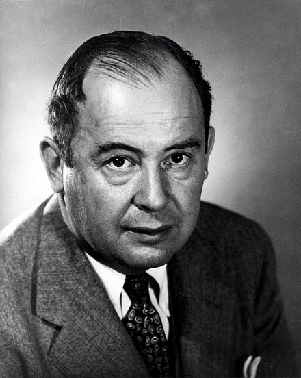

Home
This website is dedicated to John von Neumann, a Hungarian mathematician who made important contributions to mathematics, physics, computer science, and the area of artificial life. This guy is a legend.
"There's no sense in being precise when you don't even know what you're talking about."
“If people do not believe that mathematics is simple, it is only because they do not realize how complicated life is.”
“Can we survive technology?”
- John von Neumann